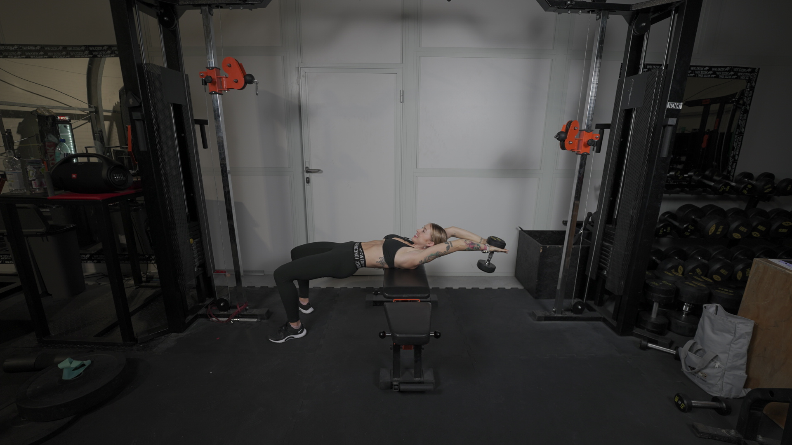
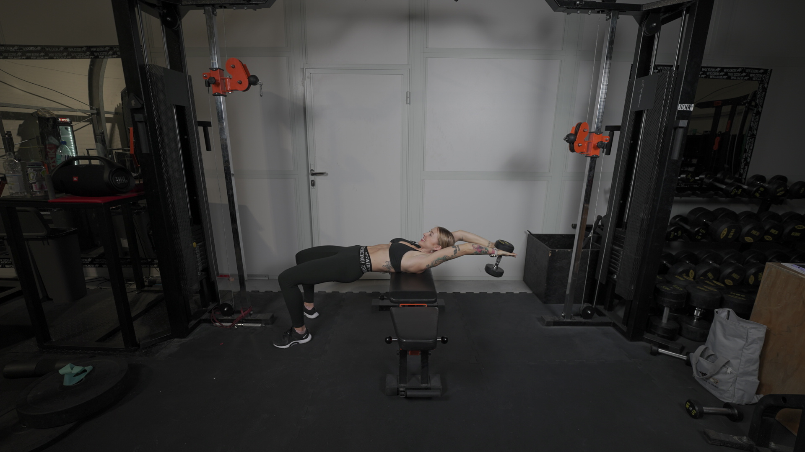

PRZENOSZENIE HANTLA ZZA GŁOWY
 

1. W dłonie złap hantel.
2. Ustaw się prostopadle do ławeczki, opierając o nią łopatki.
3. Unieść biodra, napnij pośladki i brzuch, a hantel podnieś nad głowę.
4. Rozpocznij ruch przenoszenia hantla zza głowę.
5. Zjedź tak nisko jak pozwala Ci Twoja mobilność.
6. Powróć do pozycji wyjściowej, skupiając się na spięciu klatki piersiowej.